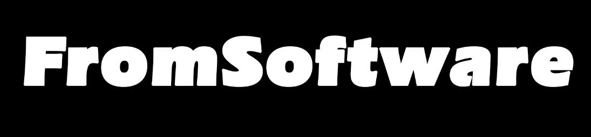

Desarrollo
Dark Souls 1 fué desarrollado por el estudio japonés Fromsoftware Studios
y lanzado al mercado en el año 2011 bajo la dirección de Hidetaka Miyazaki, siendo esta entrega la que catapultaría a la fama
tanto al estudio como al director.

El segundo juego no contó con la presencia de Miyazaki ya que este se encontraba en el desarrollo
de Dark Souls 3, por lo que no tuvo el mismo recibimiento por parte de la audiencia